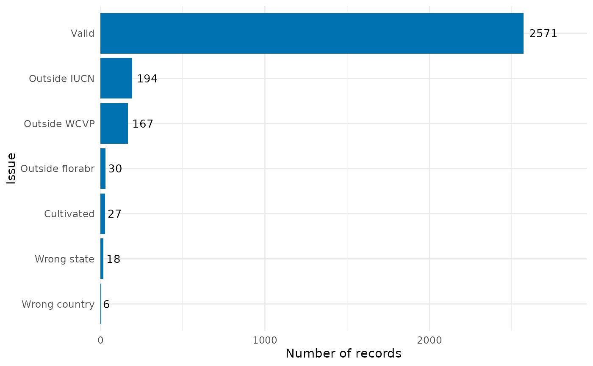

This functions returns a dataframe and a bar plot summarizing the number of records flagged by each flagging function.
Usage
summarize_flags(
occ = NULL,
flagged_dir = NULL,
output_format = ".gz",
flags = "all",
additional_flags = NULL,
names_additional_flags = NULL,
plot = TRUE,
show_no_flagged = TRUE,
fill = "#0072B2",
sort = TRUE,
decreasing = TRUE,
add_n = TRUE,
size_n = 3.5,
theme_plot = ggplot2::theme_minimal(),
...
)Arguments
- occ
(data.frame or data.table) a dataset containing occurrence records that has been processed by one or more flagging functions. See Details for available flag types.
- flagged_dir
(character) optional path to a directory containing files with flagged records saved using the
remove_flagged()function. Default isNULL.- output_format
(character) output format used to read the removed records. Options are
".csv"or".gz". Only used whenflagged_diris notNULL. Default is".gz".- flags
(character) the flags to be summarized. Use
"all"to display all available flags. See Details for all options. Default is"all".- additional_flags
(character) an optional named character vector with the names of additional logical columns to be used as flags. Default is
NULL.- names_additional_flags
(character) an optional different name to the flag provided in
additional_flagsto be shown in the map. Only applicable ifadditional_flagsis not NULL.- plot
(logical) whether to return a
ggplot2bar plot showing the number of flagged records. Default isTRUE.- show_no_flagged
(logical) whether to include the number of unflagged records in the plot. Default is
TRUE.- fill
(character) fill color for the bar plot. Default is
"#0072B2".- sort
(logical) whether to sort bars according to the number of records. Default is
TRUE.- decreasing
(logical) whether to sort bars in decreasing order (flags with more records appear at the top of the plot). Default is
TRUE.- add_n
(logical) whether to display the number of flagged records on the bars. Default is
TRUE.- size_n
(numeric) size of the text showing the number of records. Only used when
add_n = TRUE. Default is3.5.- theme_plot
(theme) a
ggplot2theme object. Default isggplot2::theme_minimal().- ...
additional arguments passed to
ggplot2::theme().
Value
If plot = TRUE, a list with two elements:
- df_summary
A data frame summarizing the number of records per flag.
- plot_summary
A
ggplot2object showing the summary as a bar plot.
If plot = FALSE, only the summary data frame is returned.
Details
This function expects an occurrence dataset that has already been processed
by one or more flagging routines from RuHere or related packages such as
CoordinateCleaner. Any logical column in occ can be used as a flag.
The following built-in flag names are recognized:
From RuHere:
correct_country, correct_state, cultivated, florabr, faunabr,
wcvp, iucn, bien, duplicated, thin_geo, thin_env, consensus
From CoordinateCleaner:
.val, .equ, .zer, .cap, .cen, .sea, .urb, .otl, .gbf,
.inst, .aohi
Users may also supply additional logical columns using
additional_flags, optionally providing alternative display names
(names_additional_flags) and colors (col_additional_flags).
Examples
# Load example data
data("occ_flagged", package = "RuHere")
# Summarize flags
sum_flags <- summarize_flags(occ = occ_flagged)
# Plot
sum_flags$plot_summary
